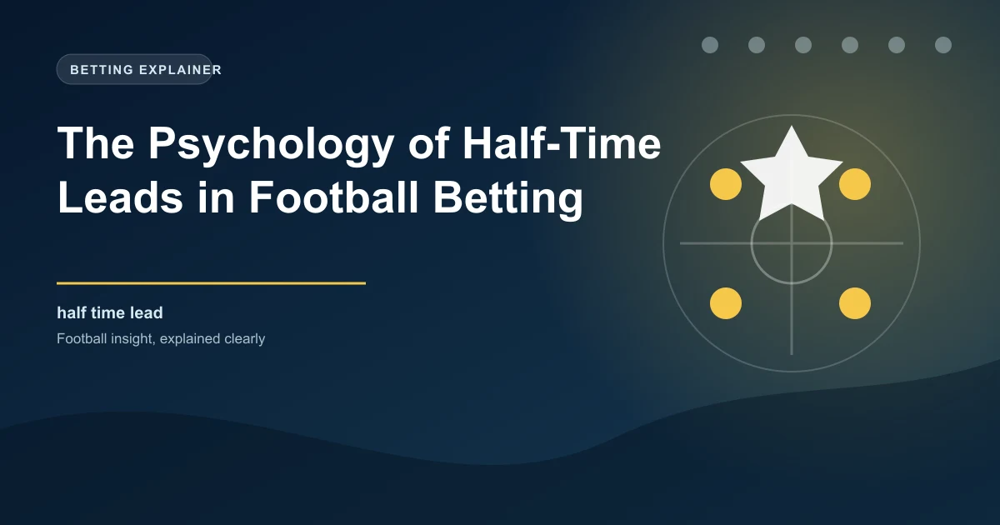

Half-time leads in football are among the most psychologically complex situations in the sport. The scoreboard at the break fundamentally alters the心态, tactics, and emotional state of both teams. For bettors, understanding how teams manage leads, how trailing teams respond, and the statistical patterns of half-time lead conversion provides a powerful edge in both pre-match and in-play markets. This is an area where psychology, tactics, and data intersect in ways that the average bettor rarely considers.
The 45 minutes after half-time in a match where one team leads is not simply a continuation of the first half. It is an entirely different game, governed by different psychological forces, different tactical priorities, and different statistical probabilities. Learning to read these dynamics is one of the most practical skills a bettor can develop.
Before exploring the psychological factors, it is essential to understand the statistical baseline. How often do teams that lead at half-time go on to win the match? The answer depends on the league, the quality gap between the teams, and the size of the lead, but general patterns emerge across Europe's top five leagues.
These numbers show that while leading at half-time is a significant advantage, it is far from a guarantee. Approximately 30% of teams that lead at half-time fail to win the match. This is a substantial percentage that represents a meaningful opportunity for bettors who understand the factors that influence this conversion rate.
Not all half-time leads are created equal. The size of the lead at half-time dramatically affects the probability of the leading team converting that lead into a win. The difference between a 1-0 lead and a 2-0 lead is not just one goal. It is a significant shift in the psychological and statistical landscape of the match.
A 1-0 lead at half-time is the most common scoreline when one team is ahead, and it is also the most precarious. Teams leading 1-0 at half-time win the match approximately 60% to 65% of the time. This means they fail to win roughly 35% to 40% of the time. The trailing team needs only one goal to equalise, which is achievable even with limited attacking quality.
The 1-0 lead is psychologically unique because it creates a tension between the desire to protect the lead and the desire to extend it. The leading team often shifts to a more conservative approach after half-time, which can invite pressure from the trailing team. If the leading team concedes an equaliser, the psychological momentum swings dramatically, and the team that was behind often pushes for a winner.
A 2-0 lead at half-time is significantly more secure. Teams leading 2-0 at half-time win approximately 85% to 88% of the time. The trailing team needs two goals to draw, which requires a much more dramatic shift in momentum. The psychological burden on the trailing team is enormous because they must commit players forward while maintaining enough defensive structure to avoid conceding a third goal that would kill the contest.
A 3-0 lead at half-time is effectively decisive. Teams leading by three or more goals at half-time win over 95% of the time. Draws are extremely rare, and comebacks are virtually unheard of at professional level. For betting purposes, the match is essentially over as a competitive contest, and markets reflect this with very short odds on the leading team.
The approach a manager takes to protecting a half-time lead varies enormously depending on their personality, tactical philosophy, and the context of the match. Some managers are naturally conservative and immediately shift to a defensive posture when ahead. Others maintain an aggressive approach and seek to extend the lead rather than protect it.
Many managers, particularly those from pragmatic coaching traditions, instinctively instruct their team to protect the lead after half-time. This typically involves dropping the defensive line deeper, reducing the number of players committed to attacks, and slowing the tempo of play. The objective is to make the match as physically and mentally exhausting as possible for the trailing team, forcing them to take risks that create spaces for a decisive counter-attack.
This approach is statistically effective in the short term. Teams that adopt a more defensive posture after leading at half-time often concede fewer chances immediately after the break. However, it carries long-term risks because sustained defending is physically draining and creates a psychological dynamic where the trailing team gains momentum as they dominate territorial possession.
Some managers, particularly those with possession-based philosophies, choose to continue playing their normal game after taking a lead. Their reasoning is that the best way to protect a lead is to keep the ball, deny the opponent opportunities to attack, and score a second goal that puts the match beyond doubt.
This approach carries its own risks. Maintaining an aggressive posture when leading requires significant concentration and physical effort. If the leading team loses the ball in a dangerous area, their advanced positioning can leave them vulnerable to quick transitions. However, teams that successfully extend their lead through this approach often produce the most emphatic victories.
The psychological state of a team that leads at half-time is more complex than it appears. While they have the advantage on the scoreboard, they face a unique set of mental challenges that can undermine their position if not managed correctly.
The primary psychological tension is between the desire to secure what they have and the opportunity to achieve more. This tension creates uncertainty in decision-making. Players may hesitate between making a safe pass and attempting a more ambitious one. Defenders may commit too early to a tackle because they want to prevent an equaliser at all costs. These micro-decisions, multiplied across eleven players over 45 minutes, can shift the balance of a match.
There is also a well-documented phenomenon in football psychology known as the "half-time syndrome." Teams that are leading sometimes come out after the break with reduced intensity, having subconsciously relaxed during the interval. This dip in concentration and energy can last for five to ten minutes, which is precisely when many equalisers are scored.
The team trailing at half-time faces a psychologically demanding situation. They must balance urgency with composure, attacking ambition with defensive responsibility, and the emotional pressure of needing to score with the tactical discipline required to avoid conceding again.
The psychological response of the trailing team typically follows a pattern. In the first ten minutes after half-time, there is often a surge of energy and determination as the manager's half-time instructions are fresh and the players are motivated to respond. If the trailing team does not score during this initial burst, frustration begins to set in, particularly as the clock ticks past the 60th minute.
After the 65th minute, trailing teams often enter a phase of desperation. The combination of physical fatigue from chasing the game and the psychological pressure of the clock creates a state where decision-making deteriorates. Players take shots from poor positions, attempt risky passes that fail, and leave defensive gaps that the leading team can exploit on the counter-attack.
This psychological arc has direct implications for in-play betting. The trailing team is most dangerous in the first ten minutes after half-time and in the final ten minutes of the match. The middle period, from the 55th to the 75th minute, is often when the leading team is most comfortable and least likely to concede.
The statistical patterns described above are averages, and the actual conversion rate varies significantly depending on the context of the match. Two of the most important contextual factors are the relative quality of the teams and their positions in the league table.
When a significantly stronger team takes a lead, the conversion rate increases. A top team leading 1-0 at half-time against a bottom-half team will convert that lead into a win more often than the 65% average because the quality gap provides a buffer against the normal vagaries of football. The stronger team has better players, more experience in managing leads, and typically better game management from the coaching staff.
Conversely, when a weaker team takes a lead against a stronger opponent, the conversion rate drops. The trailing team has the quality advantage and the motivation to push for an equaliser, while the leading team may lack the experience and tactical sophistication to protect their advantage against sustained pressure.
Motivation also plays a role. Teams that are fighting for the title, European qualification, or to avoid relegation may respond more strongly to a half-time deficit than teams with nothing to play for. The psychological stakes affect how aggressively the trailing team pursues an equaliser and how desperately the leading team defends their advantage.
The Half-Time/Full-Time (HT/FT) market is one of the most directly applicable markets for this analysis. Understanding the psychology and statistics of half-time leads helps you identify value in this market.
The Draw/Draw outcome (draw at half-time, draw at full-time) is one of the most common HT/FT results, occurring in approximately 10% to 15% of all matches. However, the value in HT/FT markets often comes from identifying matches where a team takes a lead but fails to hold it, leading to a Draw/Win or Win/Draw result.
Look for matches where a weaker team takes an early lead against a stronger opponent. The quality of the trailing team makes an equaliser likely, while the inability of the leading team to extend the lead suggests they will not maintain their advantage. These matches offer value on the HT/FT outcome that reflects the eventual comeback or draw.
The most straightforward HT/FT bet is backing a team to lead at half-time and win at full-time. This outcome is most likely when the leading team is significantly stronger than the opponent and has a strong record of game management. Look for teams that have a high conversion rate from half-time leads, strong defensive records, and experienced managers who know how to protect advantages.
The moments immediately after a goal that gives one team the lead are among the most dynamic in in-play betting. The odds shift dramatically, and the question for the bettor is whether the new odds accurately reflect the true probability of each outcome.
When a goal is scored to make it 1-0, the odds on the leading team shorten significantly, but the degree to which they shorten depends on the time remaining, the quality of the teams, and the context of the match. If the leading team is the pre-match favourite and scores early, the odds may shorten excessively because the market overreacts to the goal. This can create value on the trailing team or the draw.
Conversely, if a significant underdog scores first, the market may not shorten the leading team's odds enough because of scepticism about their ability to hold the lead. This can create value on the underdog to maintain their advantage, particularly if they have a strong defensive record and the trailing team lacks attacking quality.
When a team scores to take the lead, wait five to ten minutes before placing an in-play bet. The initial market reaction often overshoots, and the odds will adjust as the match settles into its new rhythm. If the leading team looks comfortable after ten minutes, their odds will have shortened further. If they look vulnerable, you can back the trailing team at better odds than immediately after the goal.
The psychology of half-time leads is one of the most fascinating and underexploited areas in football betting. By combining statistical analysis with an understanding of managerial tendencies, player psychology, and match context, you can identify value in HT/FT and in-play markets that purely statistical models often miss. The key is recognising that a half-time lead is not just a number on a scoreboard. It is a psychological inflection point that changes the fundamental dynamics of the match.
Check our in-play predictions for matches where half-time dynamics create betting value. Get expert analysis in real-time.
 Win
Win